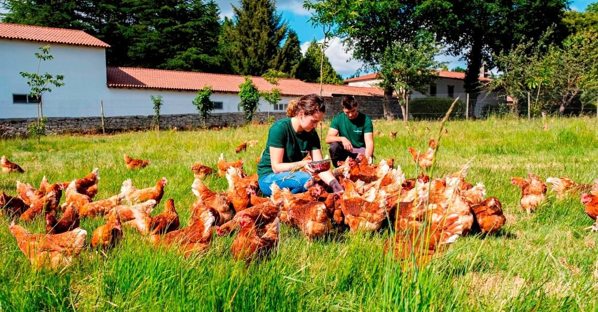

La granja escuela Finca la vaca Lola está situada en el parque natural de las sierras de chuchumeco, rocanrola y rocamar a 1.200 metros de altitud, en un antiguo cortijo reconstruido; un lugar privilegiado para contemplar hermosos paisajes y gran diversidad de especies vegetales y animales.
